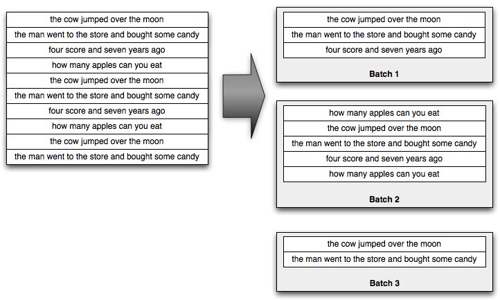
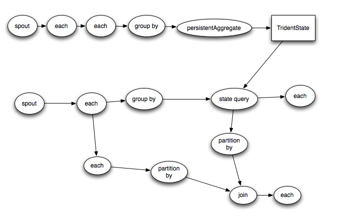

Tridentは、Stormの上でリアルタイムコンピューティングを行うためのハイレベルの抽象化です。これにより、高スループット(数百万メッセージ/秒)と、低レイテンシの分散クエリによるステートフルなストリーム処理をシームレスに混在させることができます。PigやCascadingのような高水準のバッチ処理ツールに精通しているのなら、Tridentの概念は非常によく似てています -- Tridentには結合、集約、グループ化、関数、フィルタがあります。これらに加えて、Tridentはステートフルでインクリメンタルな処理を行うためのプリミティブをデータベースや永続ストアの上に追加しています。Tridentには一貫性のある、exactly-onceのセマンティクスがあるので、Tridentトポロジを使うのは合理的です。
Tridentの実例を見てみましょう。 この例は2つのことを行います:
説明のため、この例では、以下のソースから文の無限ストリームを読み込みます:
FixedBatchSpout spout = new FixedBatchSpout(new Fields("sentence"), 3,
new Values("the cow jumped over the moon"),
new Values("the man went to the store and bought some candy"),
new Values("four score and seven years ago"),
new Values("how many apples can you eat"));
spout.setCycle(true);
このSpoutは、その文の集合を何度も繰り返して、文ストリームを生成しています。ストリーミングでワードカウントを実行するコードの一部を次に示します:
TridentTopology topology = new TridentTopology();
TridentState wordCounts =
topology.newStream("spout1", spout)
.each(new Fields("sentence"), new Split(), new Fields("word"))
.groupBy(new Fields("word"))
.persistentAggregate(new MemoryMapState.Factory(), new Count(), new Fields("count"))
.parallelismHint(6);
コードを一行ずつ進んでみましょう。まずTridentTopologyオブジェクトが生成されています。TridentTopologyはTridentにおける計算を構築するためのインタフェースを公開しています。TridentTopologyにはnewStreamというメソッドがあり、これは入力ソースから読み取った新しいデータストリームをトポロジに生成します。上記の例では、入力ソースは前に定義していたFixedBatchSpoutだけです。入力ソースは、KestrelやKafkaのようなキューブローカーでもありえます。Tridentは、Zookeeperで各入力ソース(何をコンシュームしたかについてのメタデータ)の小さな状態を追跡します。ここで"spout1"という文字列は、Tridentがそのメタデータを保持するZookeeperのノードを指定しています。
Tridentはストリームをタプルのsmall batchとして処理します。たとえば、文の入ってくるストリームは、次のようなバッチに分割されます:

一般に、これらのsmall batchのサイズは、入力のスループットに応じて、数千から数百万のオーダーになります。
Tridentは、これらのsmall batchを処理する完全なバッチ処理APIを提供します。APIは、PigやCascadingのようなHadoopの高レベル抽象化で見られるものと非常によく似ています: グループ化、結合、集計、関数の実行、フィルタの実行などが可能です。もちろん、各々のsmall batchを隔離して処理することは興味深いことではありません。したがって、Tridentはバッチ全体で集計を実行し、集計結果を永続的に格納する機能を提供します - メモリ、Memcached、Cassandra、または他のストアなど。最後に、Tridentはソースのリアルタイムな状態にクエリするためのfirst-classの機能を備えています。その状態は(この例のように)Tridentによって更新されるか、独立したソースの状態になる可能性があります。
例に戻ると、Spoutは"sentence"という1つのフィールドを含むストリームをemitします。次の行におけるトポロジ定義では、ストリーム内の各タプルに"sentence"フィールドを取り、単語に分割するSplit関数を適用しています。それぞれのsentenceタプルは、潜在的に多くの単語タプルを作成します – たとえば、sentence"the cow jumped over the moon"は、6つの"word"タプルを作成します。Splitの定義は次のとおりです:
public class Split extends BaseFunction {
public void execute(TridentTuple tuple, TridentCollector collector) {
String sentence = tuple.getString(0);
for(String word: sentence.split(" ")) {
collector.emit(new Values(word));
}
}
}
見てわかるように、それは本当に簡単です。単に文をとってきて、それを空白で分割し、各単語のタプルをemitします。
トポロジの残りは、単語数を計算しその結果を永続的に保存します。最初に、ストリームは"word"フィールドによってグループ化されます。次に、各グループはCount aggregatorを使用して永続的に集約されます。persistentAggregate関数は、ソースの状態に集約の結果を格納して更新する方法を知っています。この例では、単語数はメモリに保持されますが、これはMemcached、Cassandra、またはその他の永続ストアを使用するよう簡単に交換できます。このトポロジを交換してMemcachedに数を格納するのは、persistentAggregate行をこれに置き換えるだけで簡単です(trident-memcachedを使用します)。ここで、"serverLocations"はMemcachedクラスタのホスト/ポートのリストになります:
.persistentAggregate(MemcachedState.transactional(serverLocations), new Count(), new Fields("count"))
MemcachedState.transactional()
persistentAggregateによって格納された値は、ストリームによってemitされたすべてのバッチの集約を表します。
Tridentのクールなことの1つは、完全にフォールトトレラントで、exactly-onceのセマンティクスがあることです。これにより、リアルタイム処理を合理的にしています。Tridentは、障害が発生して再試行が必要な場合、同じソースデータのデータベースに対して複数の更新を実行しないように状態を維持します。
persistentAggregateメソッドは、StreamをTridentStateオブジェクトに変換します。上記の例では、TridentStateオブジェクトはすべての単語数を表します。このTridentStateオブジェクトを使用して、計算の分散クエリ部分を実装します。
トポロジの次の部分は、単語カウントに関する低遅延の分散クエリを実装します。このクエリでは、空白で区切られた単語のリストが入力として取り込まれ、それらの単語の合計を返します。これらのクエリは、通常のRPC呼び出しと同様に実行されますが、バックグラウンドで並列化される点が異なります。これらのクエリの1つを呼び出す方法の例を次に示します:
DRPCClient client = new DRPCClient("drpc.server.location", 3772);
System.out.println(client.execute("words", "cat dog the man");
// prints the JSON-encoded result, e.g.: "[[5078]]"
ご覧のとおり、通常のremote procedure call (RPC)のように見えますが、ストームクラスタ全体で並列に実行されている点が異なります。このような小規模なクエリの待ち時間は、通常10m程度です。レイテンシは、計算に割り当てられたリソースの数に大きく依存しますが、より激しいDRPCクエリには長時間かかる場合があります。
トポロジの分散クエリ部分の実装は、次のようになります:
topology.newDRPCStream("words")
.each(new Fields("args"), new Split(), new Fields("word"))
.groupBy(new Fields("word"))
.stateQuery(wordCounts, new Fields("word"), new MapGet(), new Fields("count"))
.each(new Fields("count"), new FilterNull())
.aggregate(new Fields("count"), new Sum(), new Fields("sum"));
同じTridentTopologyオブジェクトを使用してDRPCストリームが作成され、その関数の名前は"words"になります。関数名は、DRPCClientを使用するときのexecuteの最初の引数に指定された関数名に対応します。
各DRPC要求は、要求を表す単一のタプルを入力としてとる、それ自身の小さなバッチ処理ジョブとして扱われます。タプルには、クライアントが提供する引数を含む "args"という1つのフィールドが含まれています。上記の例では、引数は空白で区切られた単語のリストです。
まず、Split関数を使用して、リクエストである引数を構成語に分割します。ストリームは"word"でグループ化され、stateQuery演算子は、トポロジの最初の部分が生成したTridentStateオブジェクトにクエリするために使用されます。stateQueryは、状態のソース - この場合は、トポロジの他の部分によって計算される単語数 - と、その状態にクエリする関数を取り込みます。上記の例では、MapGet関数が呼び出され、各単語のカウントが取得されます。DRPCストリームはTridentStateと全く同じ方法で("word"フィールドによって)グループ化されているため、各単語のクエリは、その単語の更新を管理するTridentStateオブジェクトの正確なパーティションにルーティングされます。
次に、カウントを持たない単語はFilterNullフィルタでフィルタリングされ、Sum aggregatorを使用してカウントが合計され、結果が得られます。その後、Tridentは自動的に結果を待機中のクライアントに返します。
Tridentは、トポロジをどのように実行してパフォーマンスを最大化するかについて賢いです。このトポロジでは、2つの面白いことが自動的に起こります:
Tridentの別の例を見てみましょう。
次の例は、オンデマンドにURLのReachを計算する純粋なDRPCトポロジです。 Reachは、Twitterにおいて、特定のURLが提示されたユニークユーザーの数です。Reachを計算するには、特定のURLをツイートしたすべての人たちを取得し、その人たちすべてのフォロワーをフェッチし、そのフォロワーの集合を一意にして、その一意な集合の数を数える必要があります。1台のマシンでは手間がかかりすぎます - 何千ものデータベース呼び出しと数千万のタプルが必要になることがあります。StormとTridentを使用すると、クラスタ全体で各ステップの計算を並列化できます。
このトポロジは、2つの状態のソースを読み取ります。1つのデータベースは、URLをそのURLをツイートした人のリスト対応付けします。もう1つのデータベースは、特定の人とそのフォロワーのリストを対応付けします。トポロジの定義は次のようになります:
TridentState urlToTweeters =
topology.newStaticState(getUrlToTweetersState());
TridentState tweetersToFollowers =
topology.newStaticState(getTweeterToFollowersState());
topology.newDRPCStream("reach")
.stateQuery(urlToTweeters, new Fields("args"), new MapGet(), new Fields("tweeters"))
.each(new Fields("tweeters"), new ExpandList(), new Fields("tweeter"))
.shuffle()
.stateQuery(tweetersToFollowers, new Fields("tweeter"), new MapGet(), new Fields("followers"))
.parallelismHint(200)
.each(new Fields("followers"), new ExpandList(), new Fields("follower"))
.groupBy(new Fields("follower"))
.aggregate(new One(), new Fields("one"))
.parallelismHint(20)
.aggregate(new Count(), new Fields("reach"));
トポロジは、newStaticStateメソッドを使用して、各外部データベースを表すTridentStateオブジェクトを作成します。トポロジではこれらにクエリすることができます。すべての状態のソースと同様に、これらのデータベースへのクエリは、効率を最大化するために自動的にバッチ処理されます。
トポロジの定義は簡単です - 単純なバッチ処理の仕事です。まず、urlToTweetersデータベースにこのリクエストにおけるURLをツイートした人のリストを取得するように問い合わせます。これはリストを返すので、各tweeterのタプルを作成するためにExpandList関数が呼び出されます。
次に、各tweeterのフォロワーをフェッチする必要があります。このステップを並列化することが重要です。シャッフルを実行すると、トポロジのすべてのワーカーにtweeterを均等に分散させることができます。そして、フォロワーデータベースに対して各ツイーターのフォロワーのリストを取得するためにクエリします。トポロジのこの部分は、これが計算の中で最も激しい部分であるため、大きな並列性が与えられていることがわかります。
そして、フォロワーの集合を一意にしたものをカウントします。これは2つのステップで行われます。最初に、"group by"は"follower"でバッチにされ、各グループで"One" aggregatorが実行されます。 "One" aggregatorは、各グループについて数字の1を含む単一のタプルを単純にemitします。次に、1が合計されて、フォロワーの集合に対する一意なカウントを取得します。"One" aggregatorの定義は次のとおりです:
public class One implements CombinerAggregator<Integer> {
public Integer init(TridentTuple tuple) {
return 1;
}
public Integer combine(Integer val1, Integer val2) {
return 1;
}
public Integer zero() {
return 1;
}
}
これは、タプルをネットワーク上で転送して効率を最大化する前に、部分集約を行う方法を知っている"combiner aggregator"です。Sumはcombiner aggregatorとしても定義されているため、トポロジの最後に実行されるグローバルな合計値の計算は非常に効率的です。
Tridentをもっと詳しく見てみましょう。
Tridentにおけるデータモデルは、値の名前付きリストであるTridentTupleです。トポロジの間に、タプルは一連のオペレーションを通じて段階的に構築されます。オペレーションは、通常、入力フィールドの集合を取り込み、一連の"function field"をemitします。入力フィールドは、操作の入力としてタプルの部分集合を選択するために使用され、"function field"は、オペレーションがemitするフィールドの名前を指定します。
以下の例について考えてみましょう。フィールド"x", "y", "z"を含む"stream"というストリームがあるとします。"y"を入力として取り込むフィルタMyFilterを実行するには、次のようにします:
stream.each(new Fields("y"), new MyFilter())
MyFilterの実装が次のようになっているとします:
public class MyFilter extends BaseFilter {
public boolean isKeep(TridentTuple tuple) {
return tuple.getInteger(0) < 10;
}
}
これは、"y"フィールドが10より小さいすべてのタプルを保持します。MyFilterへの入力として与えられるTridentTupleは、"y"フィールドのみを含みます。Tridentは、入力フィールドを選択するときにタプルの部分集合を非常に効率的に射影することができます: 射影は本質的にコストがかかりません。
"function field"の仕組みを見てみましょう。あなたがこの機能を持っていたとしましょう:
public class AddAndMultiply extends BaseFunction {
public void execute(TridentTuple tuple, TridentCollector collector) {
int i1 = tuple.getInteger(0);
int i2 = tuple.getInteger(1);
collector.emit(new Values(i1 + i2, i1 * i2));
}
}
この関数は2つの数値を入力として取り、2つの新しい値をemitします: 数値の加算と数値の乗算を行います。フィールド"x", "y", "z"を持つストリームがあるとします。次のようにこの関数を使えます：
stream.each(new Fields("x", "y"), new AddAndMultiply(), new Fields("added", "multiplied"));
関数の出力は加法的です: フィールドは入力タプルに追加されます。したがって、この各呼び出しの出力となるタプルには、"x", "y", "z", "added"および"multiplied"の5つのフィールドが含まれます。"added"はAddAndMultiplyがemitする最初の値に対応し、"multiplied"は第2の値に対応しています。
一方、aggregatorの場合、function fieldは入力タプルを置き換えます。したがって、フィールド"val1"と"val2"を含むストリームがあり、以下のように行ったとします:
stream.aggregate(new Fields("val2"), new Sum(), new Fields("sum"))
出力ストリームには、そのバッチ内のすべての"val2"フィールドの合計を表す"sum"という単一フィールドの単一タプルのみが含まれます。
グループ化されたストリームでは、出力にはグループ化フィールドが続き、その後にaggregatorがemitするフィールドが含まれます。例えば:
stream.groupBy(new Fields("val1"))
.aggregate(new Fields("val2"), new Sum(), new Fields("sum"))
この例では、出力には"val1"と"sum"というフィールドが含まれます。
リアルタイム計算で解決すべき重要な問題は、失敗や再試行の際に更新が冪等であるように状態を管理する方法です。障害を取り除くことは不可能です。したがって、ノードが死んだり、何かがうまくいかないときは、バッチを再試行する必要があります。問題は - 各メッセージが一度だけ処理されるように、 どのようにして状態の更新(外部データベースかトポロジ内部かどうかにかかわらず)を行うかです。
これは難しい問題であり、次の例で説明することができます。ストリームの集計を行い、累積カウントをデータベースに格納したいとします。データベースにカウントだけを保存していると、バッチの状態更新を適用する際に、以前にその状態更新を適用したかどうかを知る方法がありません。バッチは以前に実行が試みられた可能性があり、データベースの更新に成功した後、後のステップで失敗した可能性があります。または、バッチは以前に実行が試みられた可能性があり、データベースの更新に失敗した可能性があります。これらについて知る術はありません。
トライデントは、次の2つのことを行うことでこの問題を解決します:
これらの2つのプリミティブを使用すると、状態更新でexactly-onceのセマンティクスを実現できます。カウントをデータベースに格納する代わりに、トランザクションIDとカウントをアトミックな値としてデータベースに格納します。そうしておけば、カウントを更新するときに、データベースのトランザクションIDと現在のバッチのトランザクションIDを比較するだけで済みます。それらが同じであれば、更新をスキップします - 強い順序付けのため、データベースの値に現在のバッチが組み込まれていることがわかります。それらが異なる場合は、カウントを増やします。
もちろん、トポロジでこのロジックを手動で行う必要はありません。このロジックはState抽象化によってラップされ、自動的に行われます。 Stateオブジェクトでは、トランザクションIDのトリックを実装する必要もありません: データベースにトランザクションIDを格納するコストを支払いたくない場合は、そうする必要はありません。その場合、状態は、障害が発生するとat-least-once-processingのセマンティクスになります(アプリケーションがそれで問題なければ)。状態の実装方法とさまざまなフォールトトレランスのトレードオフについては、このドキュメントを参照してください。
Stateは、状態を保管するどんなstrategyでも使用することができます。したがって、外部データベースに状態を格納することも、状態をメモリ内に保持してHDFSに書き出すこともできます(HBaseの仕組みに近いもの)。Stateは永遠に状態を保持する必要はありません。たとえば、最後のX時間のデータを使用可能にし、古いものを削除するメモリ内のState実装もありえます。Stateの実装例については、Memcached integrationを見てください。
Tridentトポロジは、可能な限り効率的なStormトポロジとしてコンパイルされます。タプルは、groupByやシャッフルを行う場合など、データの再分割が必要な場合にのみネットワーク経由で送信されます。したがって、以下のTridentトポロジについて:

以下のようなStormのSpout/Boltにコンパイルされます:

Tridentは、リアルタイムの計算をエレガントにします。TridentのAPIを使用して、ハイスループットのストリーム処理、状態操作、低レイテンシのクエリをシームレスに混在させることができました。Tridentでは、パフォーマンスを最大限に引き出しながら、自然な方法でリアルタイムの計算を表現できます。